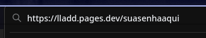
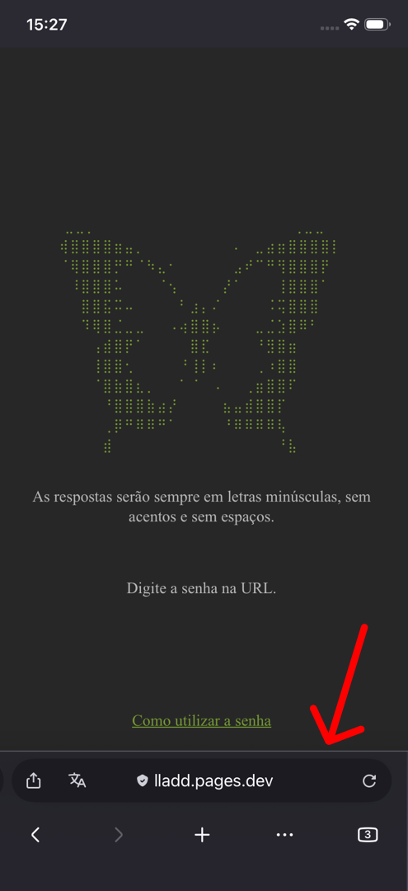
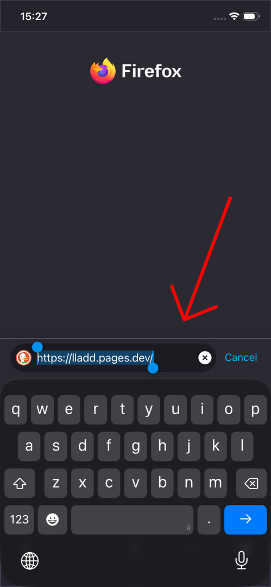
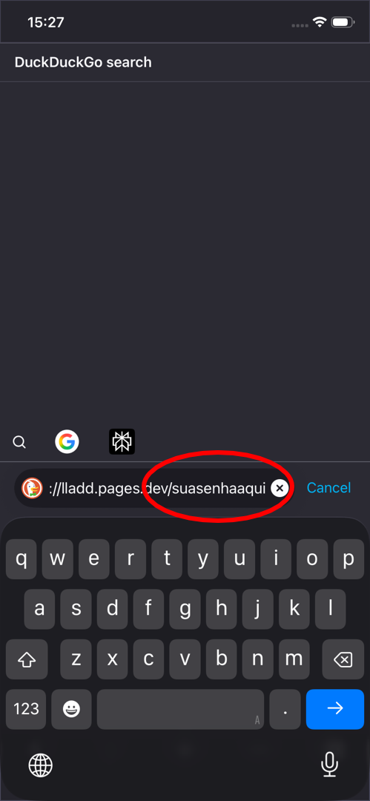

PC
Clique na extremidade direita da barra de pesquisas duas vezes e insira a senha.

Celular
Se a barra de pesquisas já não tiver aparecido,
deslize a tela para cima ou para baixo para fazê-la aparecer.
Aperte na parte vazia da barra duas vezes. Coloque a senha.
Em alguns casos, é necessário inserir uma barra antes:
"lladd.netlify.app / suasenhaaqui"


